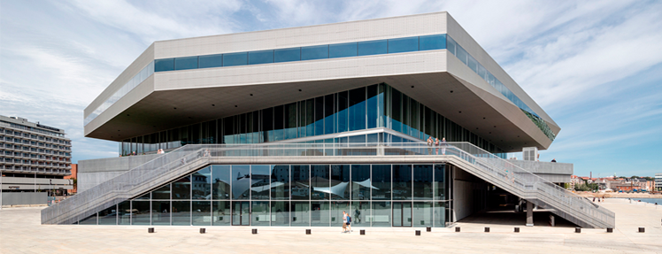

Aarhus Ø er den nye bydel i Aarhus, der går fra Dokk1 i syd til Lighthouse i nord. Imellem de to bygninger er der bygget og bliver stadig bygget en masse bygninger som Navitas, der huser ingeniør- og maskinmesterstuderende, flere erhvervsbygninger, verdens største havnebad, nye boligbygninger og nyt hotel alt sammen i ny, spændende og enestående arkitektur, der bliver skudt op mellem smukke kanaler og skaber en arkitektonisk højborg i Danmark og Europa. Alt sammen gør, at der her opstår en helt ny bydel med caféer, butikker, restauranter og boliger omgivet af havet og lyset, tilsat et unikt maritimt strejf.
Dokk1
Dokken eller dokket? Det er vist hip som hap, men Dokk1 er Aarhus’ nye hovedbibliotek og er blevet taget rigtig godt i mod. Unge som gamle benytter sig i stor stil af Dokk1’s faciliteter, som er Skandinaviens største offentlige bibliotek. Den 35.000 m² bygning, som er tegnet af arkitektfirmaet Schmidt Hammer Lassen, huser også borgerservice, kontorlokaler, automatiseret p-anlæg til 1.000 biler og nye havnerum og offentlige pladser. Dokk1 er beliggende ved udmundingen af Aarhus Å og er en del af en lokalplan for hele det tidligere industrielle havneområde i Aarhus – Aarhus Ø. Dokk1 forbinder således både visuelt og praktik den historiske bymidte med de bynære havnearealer med bygningens hovedtanke som et stort overdækket byrum. Dokk1 er Aarhus Kommunes største byggeprojekt i byens historie.
Isbjerget
Som navnet siger i sig selv er bygningen, Isbjerget, tegnet som et stort isbjerg og med byggeriets altaner i farver, der skifter fra havblå i de nederste altaner til hvid (glasklar) i de øverste, viser det, hvordan vandet slår op om isbjerget. Isbjerget er opført i 2011-2013 og er 10 etager højt og rummer 208 lejligheder i størrelser fra 55 m2 til 227 m2, og da nogle af lejlighederne er i forskudte plan og nogle med to etager, er der noget for enhver smag. I hver af lejlighederne er havudsigt højt prioriteret og de forskellige lejligheder kan nyde en udsigt, der strækker sig fra Aarhus by og bevæger sig over Marselisborg Skov, Aarhus Bugt og Kalø Vig og hele vejen til Helgenæs og Sletterhage. Isbjerget er tegnet af fire arkitektfirmaer, hvor de to danske arkitektfirmaer er CEBRA og JDS Architects, det hollandske arkitektfirma er Search og det franske er Louis Paillard. Isbjerget har vundet flere internationale priser for sin spektakulære arkitektur.

Navitas
Omgivet af vand på Aarhus Ø er den stjerneformede og maritime bygning, Navitas , Aarhus’ nye centrum for innovation og energi med Ingeniørhøjskolen og INCUBA Science Park og Århus Maskinmesterskole, som indgår i et fælles byggeri på 38.000 m2 og rummer 2500 studerende, undervisere og erhvervsdrivende. Navitas går forrest i rækken om at være en af de største energirigtige bygninger med sine 1280 solceller på taget, som forsyner bygningen med energi og bygningen bliver kølet ned af en havvandsbaseret aircondition. Navitas blev opført i 2011-2014 og Kjær & Richter sammen med Christensen & Co arkitekter står bag arkitekturen.
Bestseller
Bestseller har fået sit hovedsæde på havnen i Aarhus og er nabo til Navitas og Mols-linjen. Arkitekturen for Bestseller består af en række bygningskroppe, der ligger forskudt i forhold til hinanden og er forbundet af forskellige udearealer indimellem, fx atrier, terrasser og taghaver, som gerne skulle give en fornemmelse af at være en by i byen. Bygningen på 22.000 m2 til kontorer og 24.000 m2 til varemodtagelse, parkering og teknik rummer ca. 800 arbejdspladser, showrooms, auditorium, foto- og filmstudier, en stor kantine og fælles faciliteter til modeshows og konferencer. Ligesom Navitas gør Bestseller sig også brug af havvandsbaseret aircondition og solceller til energi til bygningen. Bestseller, som har vundet priser for sit kontorbyggeri, er tegnet af arkitektfirmaet C.F. Møller Architects og blev opført i 2009-2015.
Den hippe ø
Det engelske medie The Independent har kåret Aarhus Ø som et af de mest hippe steder at bo og som et sted, der er værd at besøge. De beskriver øen som et imponerende kvarter ovre vandet og som en del af deres begrundelse for hvorfor, er arkitekturen, det nye kommende hotel Guldsmeden og havnebadet blandt andet nævnt.
Kritik
Desværre for Navitas er den allerede blevet for lille til alle de nye studerende, der har fået øjnene op for de tekniske fag og har derfor planer om at rykke ud af Navitas. En anden kritik af Aarhus Ø er, at bygningerne er blevet for høje, for tætte og at arkitekturen er noget helt andet og afviger derfor fra resten af Aarhus. Den verdensberømte danske byplanlægger, arkitekt Jan Gehl mener, at Aarhus Ø er en trist lillesøster til Ørestaden med ufølsom arkitektur, manglende byrum og ikke gav plads til, at folk havde lyst til at være der. Men mon ikke når alt står færdigt på øen, at det nu vil spænde godt sammen og rumme liv, kultur og uddannelse, så folk har lyst til at bruge det som en lille by i den store by.